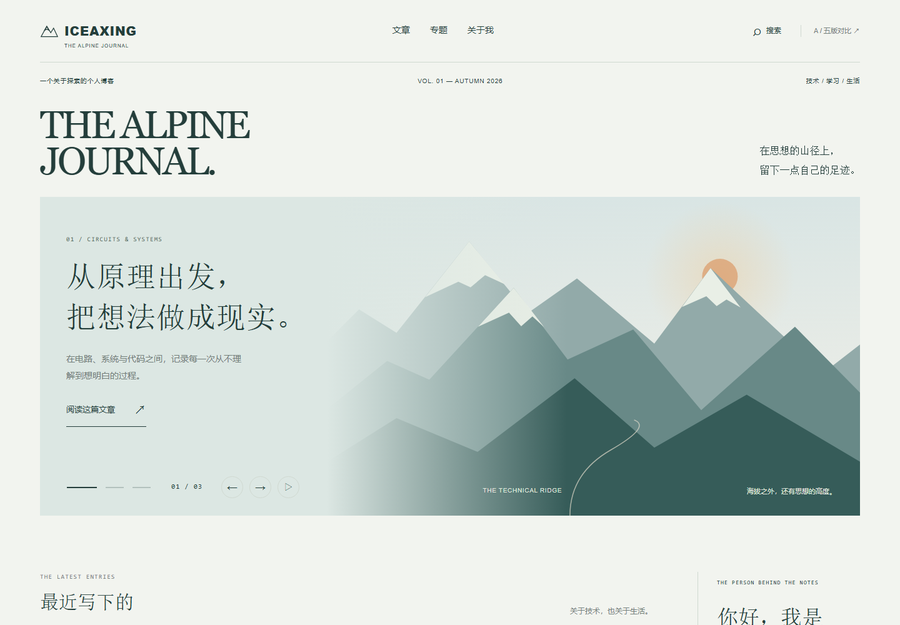
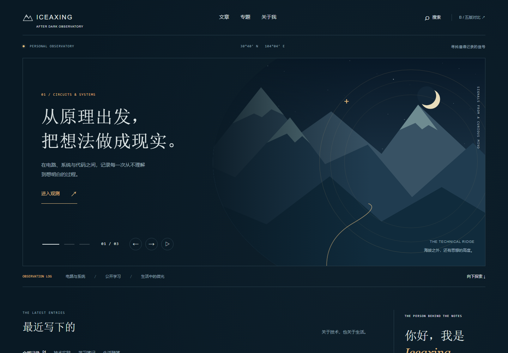
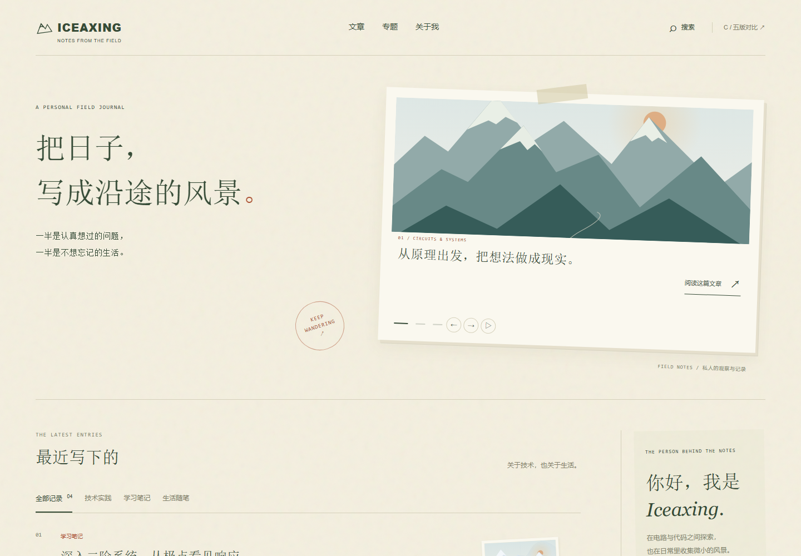
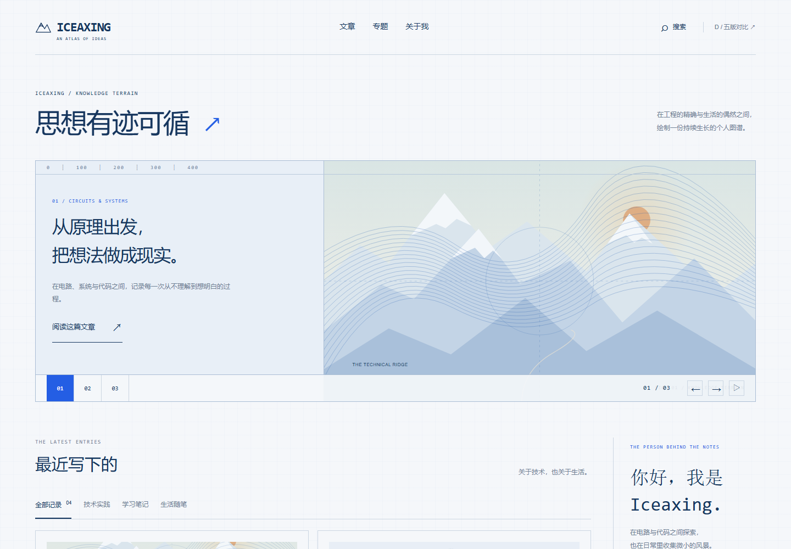
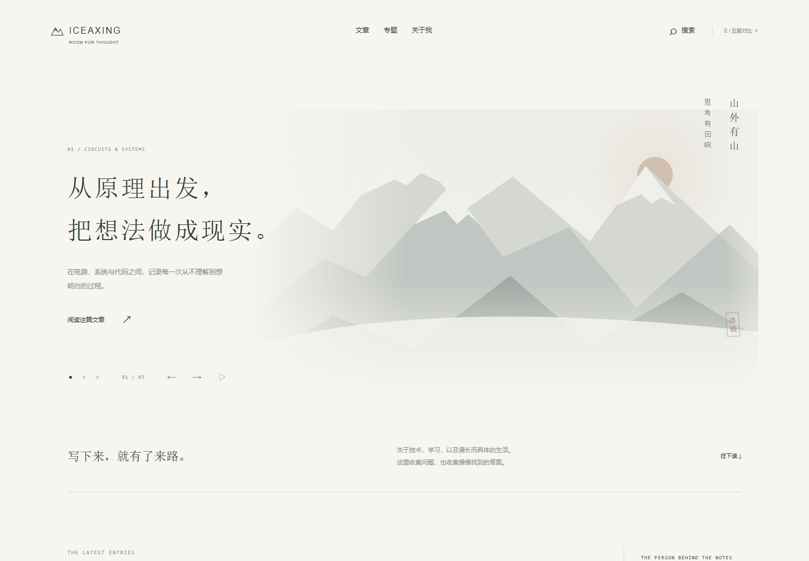

同一座山，
五种抵达方式。
让主题成为气质，让美感服务阅读。
五套独立的博客设计，包含完整页面、响应式布局和真实可体验的轮播。

A清冷 · 编辑设计 · 全景叙事
雪线编辑部↗
用杂志的秩序，收纳山野的自由。大幅山景与清晰的文章编排并置。
交互 / 山景交叉溶解，文字轻移；内容区自然滚动。

B深蓝 · 星轨 · 沉浸探索
夜航观测站↗
把知识当作夜空中的坐标。深蓝、冰白与一抹琥珀，构成安静的个人观测站。
交互 / 轨道标记转动，观测窗切换；保留明确的前后按钮。

C纸张 · 自然 · 人文温度
山野手札↗
像翻开一本随身携带的手札。苔绿与陶土红，记录技术之外的生活温度。
交互 / 纸页平移与轻微旋转，手动翻页；支持滑动。

D网格 · 钴蓝 · 理性结构
工程图谱↗
以坐标、线条和模块建立知识地形。让工程感成为美感，而不是后台界面。
交互 / 图谱沿水平轨道移动，索引同步；按主题筛选文章。

E留白 · 墨色 · 东方意境
极简远山↗
把山留在远处，把文字放在眼前。克制的水墨层次与宽松留白，为阅读留出空间。
交互 / 远山缓慢显隐，标题柔和切换；无强制滚动。
如何比较这五版
先看整体气质，再切换三篇精选，向下浏览文章和专题。支持键盘左右切换与触摸滑动；轮播默认手动，可主动开启自动播放。文章、搜索、筛选和专题路线均可操作。
所有插画均为本地 SVG；无需网络即可打开。正文窗口为排版演示，部分文案为样稿编排，不代表正式文章内容。正式站点尚未应用这些设计。